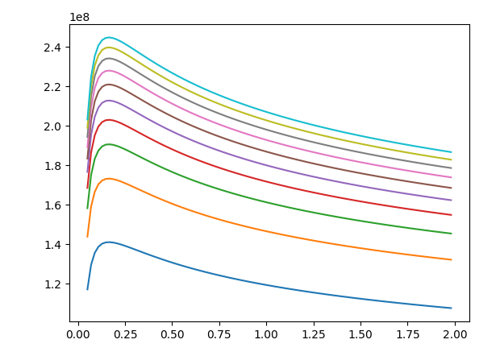
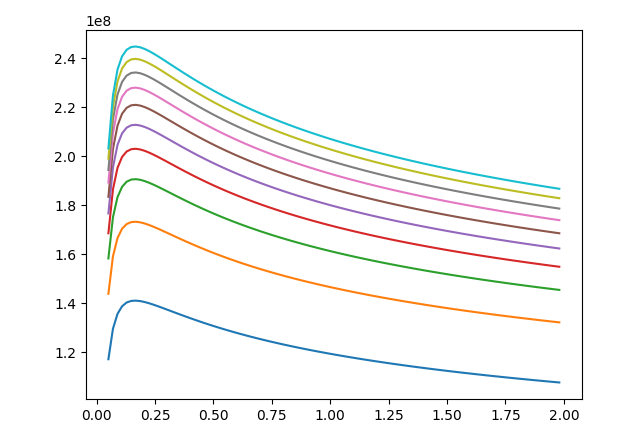

-
20240603 - WeldForm SPH - Thermal Conduction
#SPH #Thermal #AxisymmetricI included reading convection from input to WeldForm SPH solver. Now I must to modify thermal conduction equation. There are several works reeferring to this. Since Brookshaw developed SPH on axisymm coordinates, different works like ( García-Senz et Al ) and ( Castillo et al.) have developed the conduction equation. Original 3D current eqn is the following:
Now shuld be changed: according to D. García-Senz
and, according to
-
20240530 - WeldForm GUI - Mesh creation
#GUI #FEM #SPH #OpendGLThe wrk with the renderer is just begining. Now, not only SPH but also 2D and 3D FEM domains can be created from GUI. The idea is to add the great gmsh library in order to only create the geometry outside, and all the rest can be performed by the GUI: meshing, model creation (BCs, steps), running and post-processing.
Image shows a FEM cube mesh.

-
20240529 - First Examples of Extrusion process made with WeldForm
#FEM #WeldForm #SPHFirst models have been succesful!! I have to study several things, like some
strange behavior of the particles and the axial force.Image shows a bronze extrusion process.
-
20240528 - WeldForm FEM & SPH advances
#FEM #WeldForm #SPHToday was an enhancements day. I have fixed / added several things on both FEM & SPH versions of WeldForm solvers.
In case of SPH solver, I have modified several thing in order to consider only contact conduction heat, and deprecating plastic heat and friction heat by the moment.
20240527 - Added state of contact conduction at the begin of the solution.
20240528 - Added feature of assign initial diff conditions for different Zone IDs
- Fixed contact BC with amplitude function (there was readng zero value)
- Added amplitude factor to be 1.0 by default (it was zero)
- Fixed contact conduction and friction heat for Axisymmetric
- Added optional plastic work heat
- Fixed contact conduction reading
In case of FEM solver, I'm currently adjusting the code fixing some errors before passing to GPU version which have a couple of bugs.
The intention is to compare the performnce on both CPU and GPU version, since the code is in fact the same, with modification through pre-processor instructions. -
20240527 - WeldForm SPH Capacities
#SPH #WeldFormThermal plastic heat generation is working OK! Example of Cylinder under compression.
There are still some issues regarding with contact thermal conduction which have to be fixed.
WeldForm accepts several contact surfaces, so here is an example of an extrusion problem.


-
20240524 - WeldForm GUI , again.
#FEM #WeldForm #OpenGL #GUIAgain the built it renderer is being constructed. Fixed several index things (including some redundant reading from my library LSDynaReader) and now can be shown 2D and 3D elements, created or imported from K files. Lines are not redundant, since are checked with C++ sets. I'll do the same with faces in onder to plot only external faces and edges. Run a FEM/SPH model and show the results is coming...

-
20240523 - WeldForm GUI
#FEM #WeldForm #OpenGL #GUIWeldFormGUI now imports LS-Dyna files and displays them .. uhm, almost.
Love to code the native opengl renderer, pending since so much time ago. I'm reading about several known renderers, like Super Tux Kart and Bullet3 physics engine, and asking myself about how much verte buffer to use, is it convenient to use one for triangles and another one for wireframe? Considering rendering time and cost of binding. -
20240522 - OpenRadioss - DSIF
#FEM #Explicit #OpenRadioss #Forming #DSIFNow the radioss script allowa to make different radius and shapes for DSIF.
Now will be available the ASDIF variant from inside to outside. Check on here: OpenRadioss Tutorial
-
20240521 - OpenRadioss - Thermal Incremental Forming
#FEM #Explicit #OpenRadioss #Forming #DSIFI'm facing the problem of not being able to intriduce thermal flux on OpenRadioss Shell problem. Trying to run a double sided incremental forming with assisted heat by joule effect, i'm discovering that even if the /IMPFLUX keyword are not giving me a warning, is only intended for 3D elements.
Because of this, I will run a only thermal 3D example (the overall 3D model would cost a lot of CPU), and then I will map the temperatures in order to put these on the thermo-mechanical model as inputs (at least), those which are on the tool zone. By the way, I have improved the openradioss generation script in order to include several path shapes.
Check on here: OpenRadioss Tutorial -
20240520 - WeldForm FEM Working on C++
#WeldForm #FEMAfter several checks and errors found, finally, FEM explicit c++ CPU/GPU solver is working for 3d correctly. Is pending to check for Assemblying things. WeldForm FEM is an explicit reduced integration FEM solver in order to solve large deformations quickly. The idea is to study performance of Lagrangian solver CPU vs GPU. On the other side, to this code will be added an eulerian part (via operator split such as abaqus, and radioss) in order to study very large displacments and strains problems. The code architecture is structured such as could be built for CPU / GPU only changing preprocessing. Input could be given as LS-Dyna Format. 2D Is still pending (previous F90 version covers this.)
-
20240514 - AXISYMM Frictional Contact is working
#WeldForm #SPH #AxiSymmetric #Contact #MaterialRecent WeldForm Changes. Added GMT material!
20240513 - Added reading than one contact surfaces
- Changing normal calcs of planes
20240514 - Added GMT material to inpt
- Begining to add hot compression example with GMT mat
- Corrected yield stress calc with correct Initial Temp
-
20240507 - AXISYMM SPH Working AND NairnMPM is running (almost)!!
#WeldForm #SPH #FEM #MPM #GMT #ForgeOk, GMT material model is introduced to WeldForm SPH code, this material is used to solve hot forging processes.
The idea is to introduce it also in NairnMPM code in order to see some results.
Some benchmarks are working with Johnson Cook material with MPM.
The idea is to compare them with SPH formulation. 


-
20240507 - AXISYMM SPH Working AND NairnMPM is running (almost)!!
#WeldForm #SPH #Axisymmetry #FEM #MPMThree different projects are working:
- Also, a Graphical user interface for both SPH and FEM is being projecting..
- WeldForm SPH 2D AXISYMM IS WORKING!!! Finally, Wang formulation is working, also is fixed contact, but still pending thermal coupling
- NairnMPM is finally built with cmake (avoiding VS and working on linux)
- TinyestFEM project working on python (1 element FEM axisymmetric). This is intended to be part a tutorial series which will be detailing how FEM Eulerian - Lagrangian (ALE) works. -
20240426 - AXISYMM SPH Almost Working..!
#WeldForm #SPH #AxisymmetryI fixed several issues with 2D Axisymm code. Pressure (EOS equation) and Speed Sound were calculated using fake density, (since following J Wang, D Chan and J Zhang, 2015, equations are based on density affected by radius ), one term of acceleration was wrongly calculated and still missing artifficial viscosity. Seems to be almost working!

-
20240426 - AXISYMM SPH!
#WeldForm #SPH #AxisymmetryStill Trying with 2D Axisymmetric SPH on WeldForm. I'm following "Stable axisymmetric SPH formulation with no axis singularity" (J Wang, D Chan and J Zhang, 2015). I've found several errors. Steps for plane strain to Axisymm are:
0-As in plane strain, I define r->x, z->y,but now is theta->z 1-Change density to axisymm density
2-Replace momentum vars per new eqns (and ar has a hoop stress term added)
3-Calculate Hoop Strain rate as vr/r
4-What about strain and rot rates?

-
20240425 - DSIF Double Sided Incremental Forming
#FEM #Explicit #OpenRadioss #Forming #DSIFFixed XY PLANE SYMM on WeldForm!!!!! Not working yet axisymm slice.

-
20240424 - Kratos Multiphysics, HOWTO run PFEM Module
#FEM #PFEM #Kratos #TutorialFinally, several steps concerning to usigng Kratos
1. Execute ./standard configure
Adding
export KRATOS_APPLICATIONS=
add_app ${KRATOS_APP_DIR}/LinearSolversApplication
add_app ${KRATOS_APP_DIR}/StructuralMechanicsApplication
add_app ${KRATOS_APP_DIR}/FluidDynamicsApplication
add_app ${KRATOS_APP_DIR}/PfemApplication
add_app ${KRATOS_APP_DIR}/PfemSolidMechanicsApplication
add_app ${KRATOS_APP_DIR}/PFEM2Application
add_app ${KRATOS_APP_DIR}/MPMApplication
And
# Configure
cmake -H"${KRATOS_SOURCE}" -B"${KRATOS_BUILD}/${KRATOS_BUILD_TYPE}" \
-DUSE_MPI=OFF \
-DUSE_TRIANGLE_NONFREE_TPL=ON \
-DUSE_EIGEN_MKL=OFF \
-DKRATOS_GENERATE_PYTHON_STUBS=ON
2. make install . This create bin folder inside kratos (which is being ommited in git). Inside bin, is Release folder in which is "KratosMultiphysics"
3. This is in order to read scripts
export PYTHONPATH=/home/weldform-pc/Numerico/Kratos/bin/Release
4. Replace inside MainPfem.py:
#import MainSolid
with
import KratosMultiphysics.SolidMechanicsApplication.solid_analysis as MainSolid
5 Inside TestFactory.py replace
import KratosMultiphysics.PfemApplication.MainPfem
with
import KratosMultiphysics.PfemApplication.MainPfem as MainPfem
6. Inside solid_analysis.py replace
#self.t0p = timer.clock()
self.t0p = timer.process_time()
7. Change in DelaunayMeshingApplication/remesh_domains_process.py No module named 'meshing_domain'. This file can be put inside test directory to be solved quickly. Most clean solution could be update PYTHONPATH
8. Important how to convert mesh to MDPA https://github.com/KratosMultiphysics/Kratos/wiki/Converting-Gmsh-mesh-format-to-MDPAStill some errors
-
20240423 - Kratos, PFEM Module
Today I built (once again and counting) Kratos Multiphysics in order to use PFEM module (also has MPM, PFEM2, among others). Is interesting to make (I will) a simple tutorial, since several things have to be changed, among them are the main python script of the module which is a little bit old since it imports the libraries in the old fashion. -
20240422 - Advances in general, AXISYMMETRY
#FEM #Explicit #SPH #WeldForm #AxisymmetryI'm trying to revival Symmetry on SPH. It's needed since I want to solve an extrusion problem. I like a paper written by Campos and Bonet in which they adopt axisymmetry with ghosts. I think it's kind of working on 1/4 of cylinder, but I'd like to implement less volume like Bonet.
Regarding to another fronts: Regarding to some other topics:
- Today I uploaded the first springback on OpenRadioss
- Also advanced on Axisymm FEM - Very stuck with Kratos PFEM
-
20240325 - WeldFormFEM GPU Advances
#FEM #Explicit #WeldForm #GPULast weekend commits: almost everything (except contact and hourglassing, oh and full integration not tested) is migrated to GPU / CPU in C++. Some errors in pressure and stress calcs but almost ready. I think could be convenient some Trello/jupyter nb or something like that to trace pendings. I noted the following about commit counting for each main branches: Master: 361. Develop -> 463 ... More than 100 commits ahead, WOW. I'm pretty anxious about trying GPU performance of explicit FEM on GeFORCE 1660 Ti.
Some advances on DEVLOG:
Keep on going..Date Details 20240302 - Added velocity and accel corrections. - Added mass matrices 20240308 - Fixed Vol Calc (Gasuss weight) - Added mass matrices - Fixed nodal pos calculations in predictions 20240312 - Fixed Vector to Ptr allocation 20240315 - Fixed getVel fnc. Now strains are calculated ok. - Corrected velocity components calculation of strani rate - Corrected getDerivative function (several indices and offsets were wrong). - Added velocity corrections 20240315 - Added Shape matrix calculation (for element masses and lumped matrix) 20240320 - Corrected mass matrix dimension - Added AssemblyForces device call from Kernel. - Added mass matrix calculation (parallel and CPU) 20240321 - FIXED assembly (Two allocations were missed). - Changed Initial Density - Added first stress calc -
20240302 - More Finite Volume Methods on Solid Mechanics
#FEM #FVM #Explicit #OpenFOAM #Forging #FormingOk, I did a very brief research, looking for similar works like the Haider's I mentioned in last entry. I'm wandering what I will find, if total or updated lagrangian, explicit or explicit in time, weakly compressible, among others. Will see. By now, it put them here in order to not lose them. I think I will begin a list with the works I will be finding.
Author Year Title Fallah 2000 Computational Stress Analysis Using Finite Volume Methods Bijelonja, Demirdzic, Muzaferija 2005 A FVM for large strain analysis of incompr. hyperel. materials Tukovic, Jasak 2007 Updated Lag. FV solver for large def. dyn. response of elastic body Barton, Drikakis, Romenski 2010 An Eulerian FV scheme for large elastoplastic deformations in solids Haider 2018 An upw. CC-FVM for large strain exp. solid dyn. in OpenFOAM -
20240220 - Hot Forging Methods
#FEM #FVM #Explicit #OpenFOAM #Forging #FormingIt's been a while, again. Few days ago I was doing a little research about common methods for modeling hot forging in metals. My interest is to emulate some results of Aluminium hot forging process, at high speed, which have been obtained with Simufact software. This process involves excessive large plastic strains and Simufact appeals to high remeshing to overcome this. This commercial software has a manual which describes that the method used for the simulation was the Finite Volume Method, but with a Lagrangian approach. By now, I will try to solve this process by several methods: Explicit FEM (OpenRadioss, eventually with ALE), Smoothed Particle Hydrodynamics (Radioss, and WeldFormGPU), but I became to wander how about solving this also with FVM.
Some years ago, I written a little FVM code for solving Transpor Eqns (particularly applied to Navier Stokes) with an OpenFOAM style ( FluxSol link ). Recently, after some time googling around, I came across the following great work: "An upwind cell centered Finite Volume Method for large strain explicit solid dynamics in OpenFOAM"(link here ). This PhD thesis consists of building some OpenFOAM mixed solver by combining its standard Transport solvers, linking with Solid equations, associating constituive and near incompressible relationships (don't know yet which ones) and then moving the mesh (is a Lagrangian approach, but also could be built a Eulerian one, perhaps being diffusive, but like in Abaqus with FEM). I discover also that among the authors is present J. Bonet, who wrote exceptionals works regarding with SPH formulations. All great news.
Once this FVM thing works with CPU, who knows if, with me knowing a little bit the method already from FluxSol, could this be rewritten on GPU to increase speed.... I will give it a try. Will see!
-
20231230 - DSIF Double Sided Incremental Forming
#FEM #Explicit #OpenRadioss #Forming #DSIFIt's been so many time since last entry. So many things this month. I'm finishing a python script which generates from scratch the complete input file used by OpenRadioss to calculate the process of Double Sided Incremental Forming (DSIF). The script asks you the complete set of process parameters, plate and tool dimensions, and (not yet) mechanical and materials props. I think this is a very convenient script since there are not so many examples regarding coupled mech-thermal in OpenRadioss.
Script source code is here . And here is the mesher and input generator. Both files are nedded.

-
20231122 - HOURGLASS! and Reduced Integration
#FEM #Explicit #Algorithm #Eulerian #Hourglass #ABAQUS #OpenRadioss #ALEMaking some recopilation about hourglass modes. These are the modes which arises fromreduced integration in order to improve efficiency. I'm trying to implement it on WeldFormFEM which works on full integration, but up until now solution is diverging. First paper about it which I readed was Benson. Later, I readed Goudreau works, which I wrote for WeldForm. Goudreau algorithm claims that this algorithm needs about 130 computer adds or multiples per hexa, whereas Flanagan-Belytschko algorithm needs about 630. The exact same table is in LS-DYNA manual here https://ftp.lstc.com/anonymous/outgoing/web/ls-dyna_manuals/DRAFT/DRAFT_Theory.pdf OpenRadioss has incorporated several hourglass controls: Kosloff and Frasier (simple), Flanagan-Belytschko, Physical Hourglass Formulation and Advanced Elasto-plastic. Links on hexa and here on shells On the other hand, ABAQUS uses kelvin viscoelastic control, here .
Author Year Title Kosloff, Frazier 1978 Treatment of hourglass patterns in low order finite element codes Flanagan, Belytscho 1981 A unif. strain hexa and quad and ortho hourglass control Goudreau 1982 Recent Dev. in Large Scale FEM Lag. Hydrocode Tech Benson 1992 "Computational methods in Lagrangian and Eulerian hydrocodes" -
20231108 -
#FEM #FORTRAN #Explicit #Coding #WeldForm #C++Ok, move to stress decomposing for calculating plain strain solid (still with full integration). Up until now 2D plain strain calculation was via elastic tensor, now is decomposed in order to work with plasticity. And what about plain stress?? Also begining to code C++ version, I still don't know if use Array Of Structures ofr Struct Of arrays on CPU version..
-
20231031 - SPH Damage
#SPH #Failure #Damage #OSS #List #LAMMPS #WeldForm #Charpy #Cutting #GTN #Refs #JohnsonCookOk. Surfing a Pseudo Spring model to add to WeldForm, I reached a work which uses LAMMPS software, which I didn't even know, from Sandia. The idea is to include Damage model and several (begining with Rankine as example and then JohnsonCook) failure criteria. Although Vaucorbeil and Hutchinson work is developed on a Total Lagrangian, and WeldForm is written in classic Eulerian form, the work shows the application of the pseudospring damage criteria to Johnson Cook, GTN and Cockroft-Latham damage models. Besides pseudo spring model, the other currently available damage and fracture implementation for SPH is the particle cracking method (last work and 2007 and 2010 following works of Rabczuk, T. Belytschko). According to Vaucorbeil: "Contrary to the pseudo-spring method, damage is calculated at the center of particles. When damage reaches a critical limit, the particle is split into two. In this case, damage is not localized as its value corresponds to an average over each particle’s corresponding volume. Therefore, the precise location of cracks is not defined and the way particles need to be split is non-trivial". For that reason, I kept with pseudo spring for the implementation on Weldform.
Author Year Title Solver 2013 S. Chakraborty, A. Shaw A pseudo-spring based fracture model for SPH simulation of impact dynamics Own 2019 A. de Vaucorbeil, C. R. Hutchinson A damage and failure implementation for the simulation of ductile solids with Total-Lagrangian Smooth Particle Hydrodynamics LAMMPS 2019 M.R.I. Islam, C. Peng A Total Lagrangian SPH Method for Modelling Damage and Failure in Solids Own 2004 Rabczuk, T. Belytschko, Cracking particles: a simplified meshfree method for arbitrary evolving cracks Own -
20231030 - Orthogonal Metal Cut / Drilling Simulation Papers
#FEM #SPH #Cutting #Drilling #List #RefsTrying to clean up a little bit some of the best papers about simulation of orthogonal metal cut processes..
Author Year Title Open Meth Mat Solver Arrazola, Ozel 2010 Investig. on the effects of fric. mod in FEM sim of mach. Yes FEM/ALE 4340 ABAQUS Bergs Determ. of JC mat. mod. params for AISI 1045 from ortd cut tests... Yes FEM (CEL) - ABAQUS Laaksoa, Akmel 2018 The mystery of missing feed force the eff of fric models, ... No FEM 304 DEFORM Tajdari 2016 Modeling of brittle and ductile material drilling using SPH No FEM/SPH 2024 ABAQUS Rodriguez, Larsson 2021 Imp. or exp. time int. schemes in tde PFEM mod of met cut. proc. Yes PFEM 4340 Kratos Boldyrev,Topolov 2020 Twist drilling SPH simulation for tdrust force and torque pred Yes SPH Madaj, Píska 2013 On the SPH Orthogonal Cutting Simulation of A2024-T351 Alloy Yes FEM/SPH 2024 LS-DYNA Villumsen 2008 Simulation of Metal Cutting using SPH No SPH 6082 Prieto, Jonsén, Svoboda 2016 Simulation of metal cutting using the PFEM and a physically based plasticity model Yes PFEM 316L Own Limido 2006 High speed machining modelling: SPH method capabilities Yes SPH 6061 LS-DYNA Heistein, Segalman 1997 Simulation of orthogonal cutting with smooth particle hydrodynamics Yes SPH Ojal, Cherukuri 2020 A comparison of PSH & coupled SPH-FEM meth. for model machining Yes SPH/FEM Sridhar, Prieto, Payrebrne 2020 Discretization appr. to model orth.cut. with Lag, ALE, PFEM and SPH forms No SPH/ALE/PFEM -
20231030 - More tensile things
#FEM #Tensile #Test #Law #GTN #List #RefsRegarding with material models, necking and others, I have been recollecting some papers about tensile test necking which are really good. I will add them to the links section.
Title Year Authors Mat Law OBS Analysis of the cup-cone fracture in a round tensile bar 1983 TVERGAARD, Neddleman GTN Void nucleation and growth Influence of Initial Porosity on Strength Prop of S235JR Steel at LowStress Triax. 2012 Kossakowski GTN Exp. and num. investigations on failures due to plasticity in thin walled structures. 2018 Jamil, Khan, Ali Ramber-Osgood Surface roughness characterization for fatigue life predictions using FEA 2008 As, Skallerud, Tveiten -
20231025 WeldFormSPH - C++ CUDA Virtual Functions
#CUDA #C++ #Coding #WeldFormAfter struggling a lot with virtual functions in CUDA, i just decided to kept a single class for materials in which I call a device function, with a material as an argument to call all hardening rules (calc yield stress and calc tangent modulus) from there. Another problem with inherited class is the memcpy, so, I'm tired oh inheriting on CUDA so Is all inside material class by now. Also began to write the file input reading code (contact and materials). Still remain NASTRAN reading for rigid bodies.
-
20231024 Tensile test - Necking and notch influence
#Tensile #Test #Ansys #FEM #ImplicitToday I have been working with the influence of a notch in the response of a tensile test probe. This work includes the study of the necking in pre failure specimens. I have done both an explicit and implicit analysis. The results shown correspond to static implicit analysis, in 3D.


-
20230829 C++ vs. Fortran Round 1
#FORTRAN #C++ #Coding #SPH #ExplicitOk , I have been done some testing comparing C++ and Fotran90 Smoothed particle Hydrodynamics codes. I get less than the half of calculation time Fotran 90. I discovered later that the comparison has been not fear, due to one of the 12 threads was writing outputs each 1/10th of the total time, whereas F90 code only writes an output at end time. The problem solved is: Cantilever Beam subjected to bending at one end. SPH Method. 3744 particles. Explicit Reduced Verlet (constant time step) integrator. C++ is with an AOS scheme (vector of class Particle Pointers) and F90 is with a SOA scheme (Structure of arrays).


20240510 - AXISYMM SPH Contact with Friction is FIXED : ALSO FOR 3D
#WeldForm #SPH #Axisymmety Contact (Wang and Fraser solvers and contact algorithms) is FIXED, was not working. So version 0.4.2.4 was re-tagged.
Now is correcly for both 2D and 3D.

{kind=link}